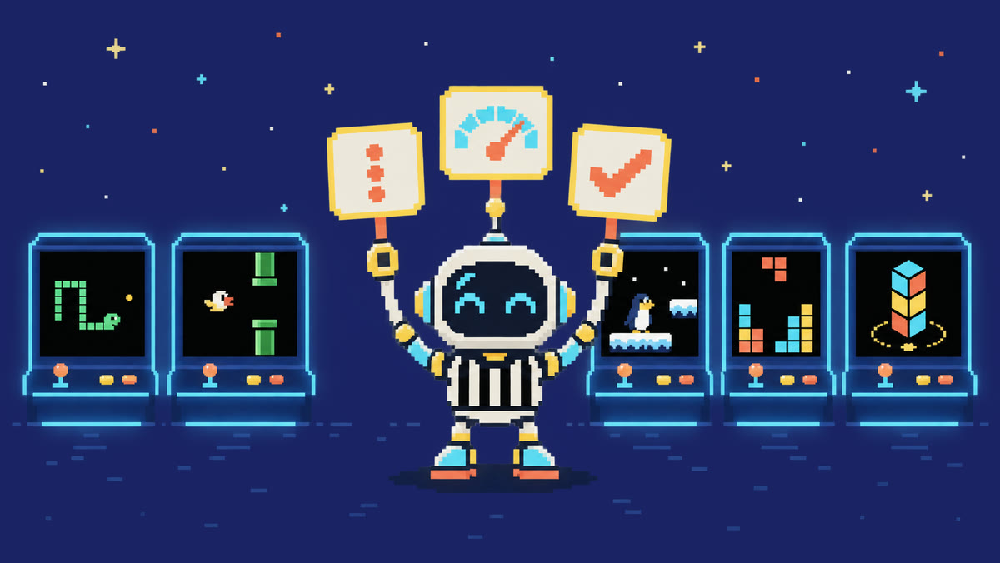
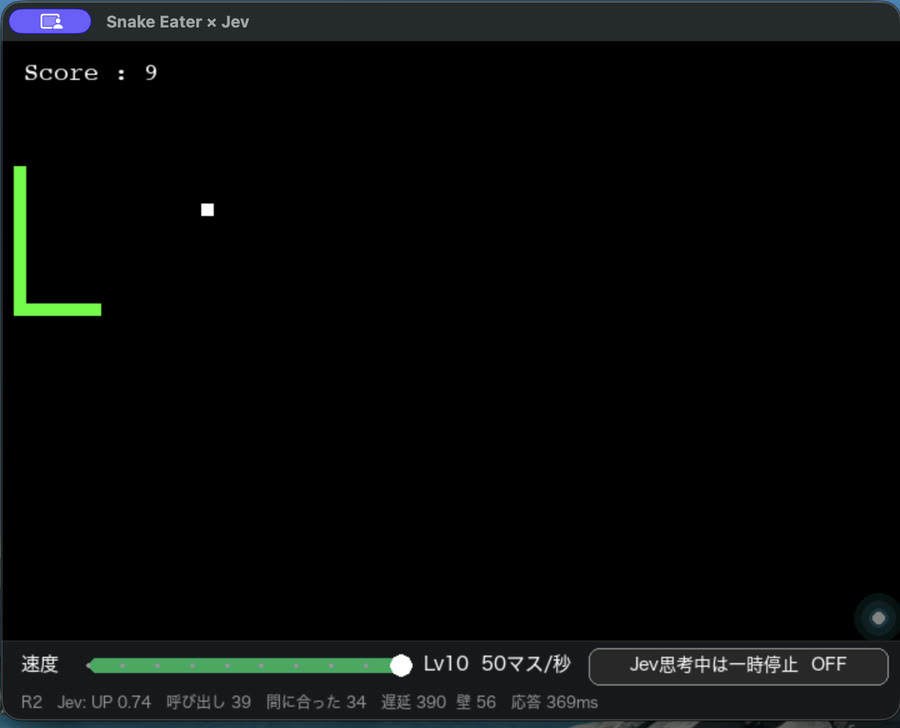
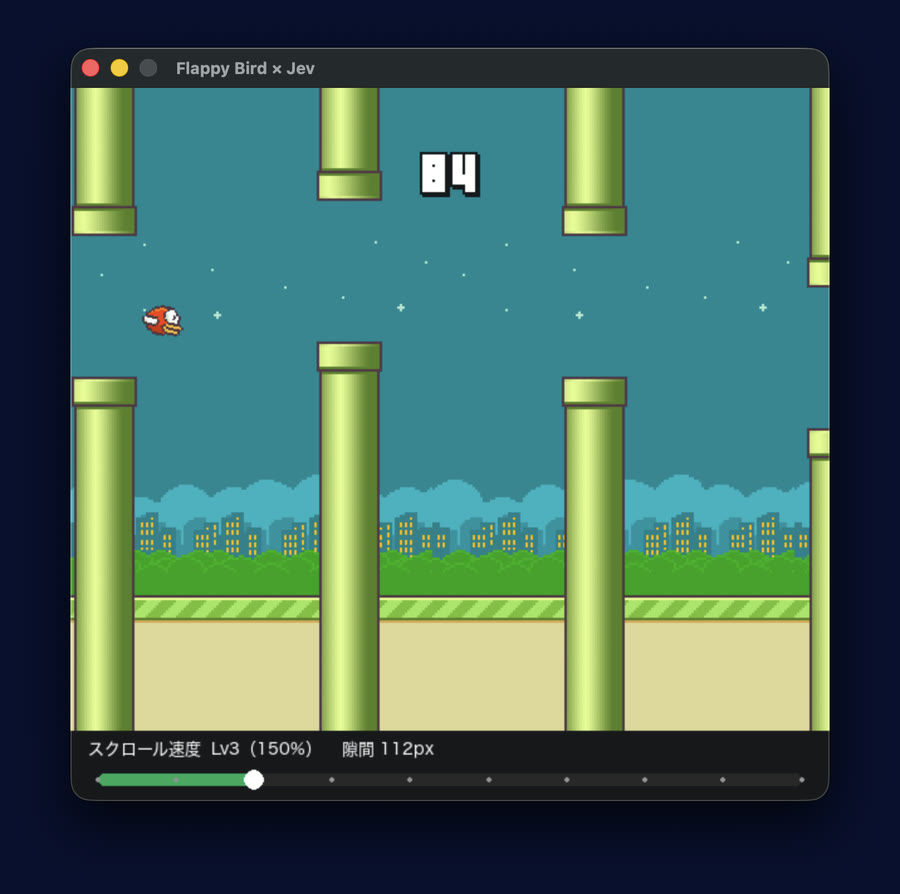
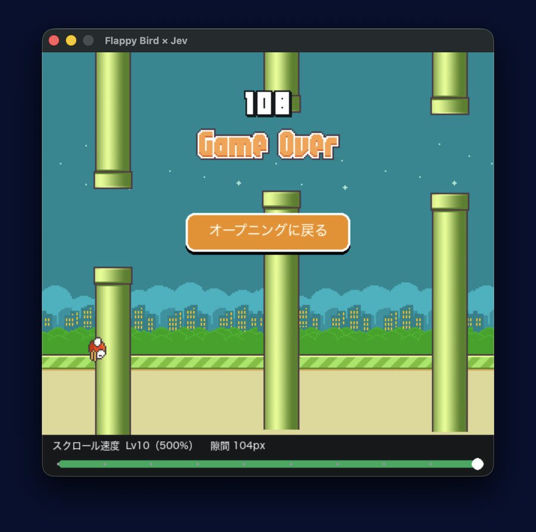
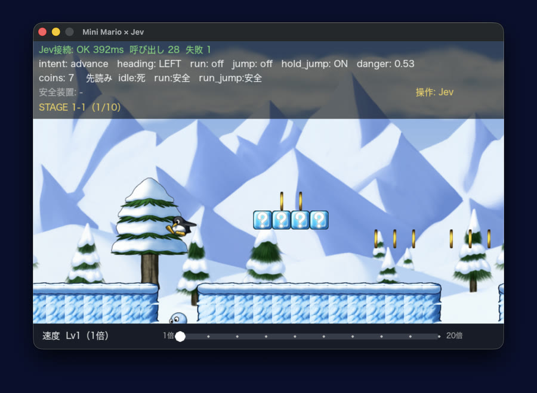

Jev とゲームのコードで判定を分担して、ゲームを5本動かしました。盤面は state にまとめ、Jev に渡す選択肢には合法手だけを並べます。将棋・囲碁・チェスでは「ルール上打てる手」を合法手と呼びます。物理演算と衝突判定はゲームのコードが処理します。このページには、そのつくりと録画をまとめました。

Jev は、TypeSafe AI が 2026 年に公開した意思決定モデルです。入力は会話履歴ではなく、プログラムが渡す state（状況）と、型のついた questions（判定項目）です。出力は文章ではなく、選択の結果・スコア・真である確率で、コードはその値で分岐します。
ChatGPT 系は、トークンを順に生成する対話・作文のモデルです。Jev は、同じ state に対する複数の判定をまとめて返し、その値をソフトウェアがそのまま使います。公式ブログはこれを「unstructured state in, typed probabilistic decisions out」と書いています。[1] Jev を置くのは、エージェントやゲームループの中で次の一手を決める層です。
Vercel AI Gateway でのモデル名は typesafe-ai/jev で、チャット API ではなく、AI SDK の evaluate から呼び出します。[4] 判定の種類は3つで、AI SDK の型名では Choice（並べた候補から1つ選ぶ）、Score（段階で評価する）、Boolean（真である確率）です。Boolean は、TypeSafe AI のドキュメントでは Noul と呼ばれています。[2]
| ChatGPT 系 LLM | Jev | |
|---|---|---|
| 役割 | 対話・文章生成 | 構造化判定 |
| 入出力 | プロンプト → 文章 | state + 型付き質問 → 選択／スコア／確率 |
| 使い方 | 人が読む文を書く | 判定結果でプログラムを分岐させる |
| 向く仕事 | 説明、実装草案の作成、対話 | ルーティング、リスク判定、次アクションの決定 |
| 向かない仕事 | 低遅延の大量判定 | 物語生成、コード生成 |
ゲームのデモは、Jev 単体にゲームを遊ばせたものではありません。判定モデルと、その周りで Jev を制御するコード（ハーネス）の組み合わせです。
スクリーンショットと短い録画です。



